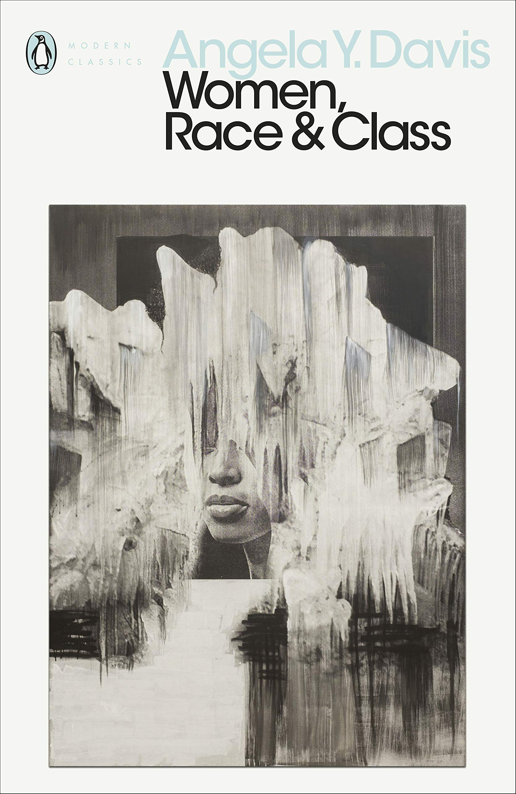

Pendant des siècles, des femmes ont créé, innové, bouleversé l’art… mais leurs noms ont été effacés ou volés.
Quelques-unes ont percé le silence, devenant des symboles malgré un chemin bien plus rude que celui des hommes. Leur lumière a souvent été filtrée, détournée, réduite à une image qui les dépassait.
Ce site est là pour rendre visible ce qui a été caché, rétablir des vérités oubliées et redonner à ces créatrices la place qu’elles méritent. Parce que connaître leurs histoires, c’est aussi réapprendre à regarder l’Histoire autrement.
Évolution du nombre de femmes et d’hommes artistes au fil des années
Que peut-on retenir ?
À l'époque, le talent des femmes était rarement reconnu, car la société patriarcale les limitait à des rôles domestiques et leur fermait l’accès aux arts, à l'éducation et aux sciences. Même lorsqu’elles excellaient, leurs réussites étaient souvent ignorées ou attribuées à des hommes. Aujourd’hui, la situation a évolué, mais de nombreuses inégalités persistent encore, et le chemin vers une véritable reconnaissance reste long.
Pourquoi est-ce important de le savoir ?
C’est important de le savoir, surtout quand on est une femme, car cela permet de comprendre les injustices du passé et de réaliser combien il a fallu de luttes pour obtenir plus d’égalité aujourd’hui. Cela rappelle aussi que les femmes ont toujours eu du talent et des capacités, même si elles étaient invisibilisées, et que leur reconnaissance actuelle est le fruit d’un long combat qu’il faut continuer à faire vivre.
Envie d’en savoir plus ? Voici quelques pistes.
Littérature
Women, Race & Class d’Angela Davis explore comment genre, classe et race s’entrecroisent dans la lutte pour les droits des femmes aux États-Unis.
Acheter le livreFilm
Suffragette retrace le combat courageux des femmes du début du XXe siècle pour le droit de vote, avec des interprétations puissantes et une reconstitution historique saisissante.
Voir au cinémaVidéo
Vidéo du Centre Pompidou sur les femmes artistes oubliées et leur rôle dans l’histoire de l’art.
Regarder la vidéo